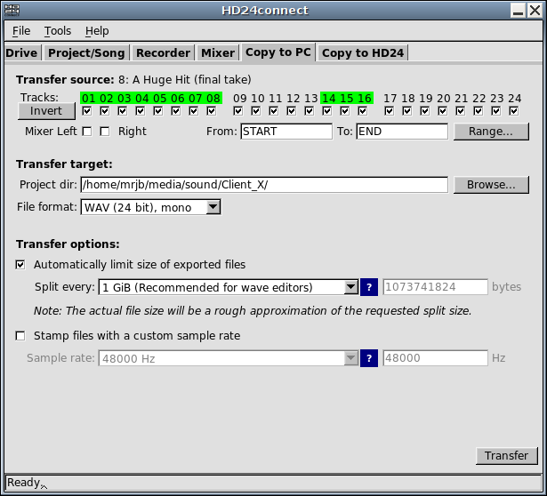
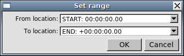
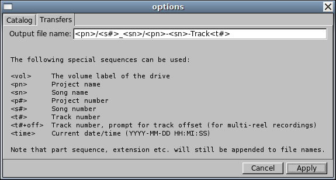

The Copy to PC tab permits you to actually transfer audio from HD24 drives to your computer. You can set many options to control how the export is performed, but under many circumstances the default values should suffice.

By default, all tracks are marked for export. If the song has less than 24 tracks, only the amount of tracks allocated for the song is displayed. To prevent tracks from being exported, simply untick the tracks that you do not want to export. The Invert button will tick all unticked boxes and vice versa, which is helpful if you only want to export a few tracks.
To make track selection easier, the numbers above the track selection checkboxes light up during audio playback.
Instead of exporting tracks, you may wish to export a mixdown; in this case, just select the Mixer Left and Right checkboxes. This will tell HD24tools to use the master output of the mixer tab instead of the individual tracks. Mixdowns are currently limited to 32-bit floating point stereo WAV files.
By default, the entire length of the selected song will be exported. In some cases, however, it may happen that you only need to export part of a track. Clicking on the Range... button pops up a dialog box which will let us choose which range to export.

We select this range by choosing two locate points. Regardless of its value, locate point START is always located before the beginning of the song, whereas virtual locate point END is always located after the end of the song. This means that selecting START and END (which is the default) will always export the entire song.
You can enter an export directory name in the Project dir field. To create a directory or to make sure it exists, use the Browse... button. HD24connect will remember the last used export directory.
If you wish to automatically create directories based on the project name or song name, you will need to customize the export file/directory name (see below).
Prior to the actual transfer, HD24connect will verify if the directory you specified actually still exists.
Before performing an export, we may still choose in what format we wish to export the audio. We do this by selecting the desired format in the Format dropdown box. Currently supported are 24-bit WAV files and 24-bit AIFF files. Although these formats should be readable by most systems, some software programs have trouble reading 24-bit PCM files. In that case, the exported data will mostly sound like loud noise. This can be resolved by finding a CODEC that supports 24-bit PCM, or by loading the audio into a program that is 24-bit capable.
In addition to mono export, HD24connect supports exporting the audio as stereo pairs and as multi-track audio. When exporting to stereo, you need to select an even number of tracks. Exporting as multi-track audio will export all tracks into the same file. Note that proper multi-track WAV and AIFF support is rare and may not work with your favorite audio program.
Stereo and multi-channel export will only work if the libsndfile module has been successfully loaded. This plugin is not required for mono exports. In any case, libsndfile should normally be available as it is distributed with HD24tools.
The HD24 recorder is capable of recording very long files (over 24 hours worth of audio). This is so long, in fact, that it may cause the recording to surpass any practical limits, as the maximum length supported by the .WAV file format is 2GiB.
By default, the size of output files is limited to 1 GiB (1073741824 bytes). This keeps the file size down to a practical limit which most audio editors and file formats will support. If the audio to export is smaller than that, no splitting will occur. Because of this, it is usually best to leave automatic splitting enabled.
If automatic splitting does occur, file names will be suffixed with _part1, _part2 etc. to indicate their order. These file parts will align perfectly. When pasting them together into your favourite audio editor, however, said audio editor may perform a cross-fade between the end of one part and the start of the next. Because of this, you may need to disable cross-fading in your audio editor prior to loading the split-up audio into it.
By default, HD24connect names files according to the pattern <pn>-<sn>-Track<t#>. This stands for Project name-Song name-TrackTracknumber. If you wish to specify your own file name pattern, use menu choice Tools->Options and select tab Transfers.

As you can see, the dialog box provides a list of possible tags that can be used in the file naming pattern. In the above image, note the forward slashes: These are directory separators (Windows users should use backslashes). The example pattern given in the image, <pn>/<s#>_<sn>/<pn><sn>-Track<t#> will cause HD24tools to automatically create a directory named after the project, as well as one for the song. The <s#> tag prepends the song number to the song directory to be created, which will guarantee that the song directory name is unique, even if several songs share the same name (such as 'Song Name'). Finally, the actual file names, will contain project name, song name and track number. HD24connect itself will still add part number and extension to these file names.
When using the Alesis Big Remote Control (BRC), you may indicate to the HD24 that you are recording at 48000 Hz, when in reality the external clock is stepped down by 147 cents to get a sample rate of 44100 Hz. As a result, there may be a mismatch between the recorded sample rate and the actual sample rate.
Because of this, HD24connect permits you to stamp songs with a sample rate of 44100 Hz (or any other sample rate you wish) even if the song is marked with another sample rate. This does not affect the sample rate of the song on the HD24 drive. Note that the only difference is the sample rate specified in the file; that is, regardless of the sample rate, HD24connect will write the exact same audio data to the file, without performing any resampling.
Finally, when all is set up and ready for export, simply click the Transfer button to start the export. This will export
To aid unassisted transfer of multiple files, on the Project/Song tab you can currently choose --All Songs-- in the song dropdown box. This will mark all songs of the current project for exporting, but is limited to exporting entire songs only, all with the same export options.
In the near future, batch transfers will work by setting up transfer options as desired and clicking Add to job queue, after which the export is triggered in the usual way.